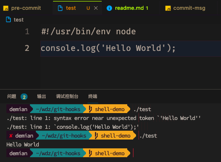
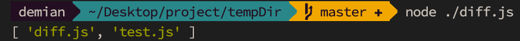
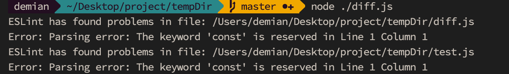

一、前言
这是基于Git hooks搭建前端工作流系列的第二篇文章，主要介绍如何使用js实现git脚本文件，完成代码语法检测功能。
整个系列文章的目录如下：
一、方案选型：介绍现在主流的自动化方案。
二、使用 js 实现代码语法检测：介绍如何利用 nodejs api 做文件 diff 和代码检测。
三、引入插件化，集成和定制更多自动化功能：介绍如何将原来的脚本文件进行插件化，方便拓展功能和切换模板。
二、脚本解释器简介
以git提供的默认脚本文件pre-commit.sample的首行代码为例：
1 | #!/bin/sh |
这行代码用到了Shebang的概念，wiki给出了如下的介绍：
在计算领域中，Shebang（也称为 Hashbang）是一个由井号和叹号构成的字符序列#!，其出现在文本文件的第一行的前两个字符。 在文件中存在 Shebang 的情况下，类 Unix 操作系统的程序加载器会分析 Shebang 后的内容，将这些内容作为解释器指令，并调用该指令，并将载有 Shebang 的文件路径作为该解释器的参数。
从上面的描述可以看出，程序加载器会根据Shebang使用不同的解释器。所以我们开发node脚本时，可以在文件的头部增加对应的指令调用node解释器，如下所示：
1 | #!/usr/bin/env node |
以打印Hello World为例，我们先新建一个node脚本，命名为 test。将其设置为可执行权限，首行暂时不加#!/usr/bin/env node。此时在 shell 文件中执行 test 文件，会发现执行错误。

这就是因为不加#!/usr/bin/env node，识别不了js的语法。然后我们加上#!/usr/bin/env node再试试：

之所以使用/usr/bin/env，是因为不同用户的node解释器会安在不同的目录中，而/usr/bin/env会帮助我们去用户的PATH中依次查找node解释器的路径。
三、编写 node 版本的语法检测钩子
1、文件 diff，列出已修改的文件
在shell中可以通过以下命令，查看暂存区修改的文件：
1 | // diff-filter：添加 (A), 赋值 (C), 删除 (D), 修改 (M), 重命名 (R) |
--cached：显示暂存区(已 add 但未 commit 的文件)和最后一次 commit ( HEAD )之间的所有不相同文件的增删改。--name-only：只显示名称。--diff-filter=ACMR：过滤掉已删除的文件，这些文件不需要做语法检测。
结合node的api，可以通过以下代码段，手动执行shell命令获取需要进行语法检测的文件名列表。
1 | const { exec } = require('child_process'); |
demo仓库的文件修改状况如下所示：

执行shell命令后的打印结果如下：

2、eslint 检测文件
Eslint提供了lintFiles方法检测文件，我们将从上面程序中获取到的文件数组传给该方法，即可调用eslint进行语法检测。代码如下：
1 | const { ESLint } = require('eslint'); |
最终打印结果如下：

3、增加 Shebang
首先，我们新建一份与git hooks的pre-commit钩子同名的pre-commit文件，注意该文件没有后缀。然后在shell中调用chmod 777 pre-commit将该文件设置为可执行文件，并在首行增加#!/usr/bin/env node。最后，我们将这段加了#!/usr/bin/env node的脚本拷贝到git仓库的.git/hooks目录中，就算大功告成了。
我们之后的每次提交，git都会触发该脚本对我们改动的文件进行语法检测。
最终的代码见 gist: 语法检测脚本
四、总结
本文主要介绍了如何使用js实现git脚本文件，完成代码语法检测功能。同理，我们也可以使用js实现commit 信息检测，npm packages 协议风险检测等功能。
由于笔者团队没有使用husky，而是采用上述的脚本文件 + vscode 插件注入的方式（详细见该系列文章的第一篇）。随着业务的不断迭代，后续的开发者在维护脚本文件时，出现了维护困难、拓展困难的问题。在下一篇文章中，笔者将介绍如何使用插件化，来隔离开发功能插件和组装 git 钩子业务的关注点，并通过 vscode 插件实现动态切换当前项目需要使用的 git 钩子。